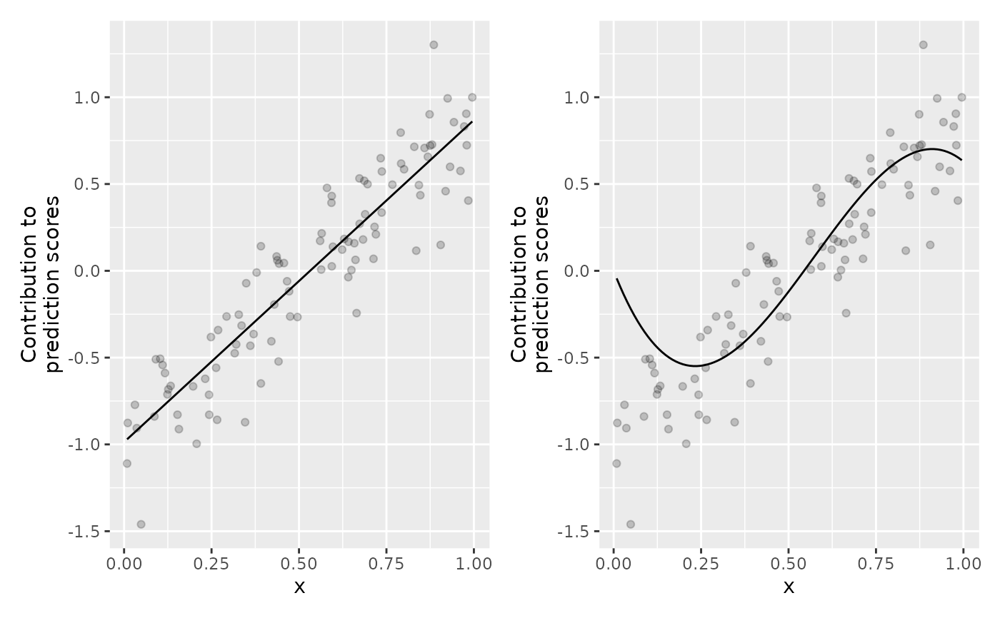

Polynomial base learner
BaselearnerPolynomial.Rd[BaselearnerPolynomial] creates a polynomial base learner object.
The base learner takes one feature and calculates the polynomials (with
intercept) \(1 + x + x^2 + \dots + x^d\) for a given degree \(d\).
Format
S4 object.
Arguments
- data_source
(InMemoryData)
Data object which contains the raw data (see?InMemoryData).- blearner_type
(
character(1))
Type of the base learner (if not specified,blearner_type = paste0("poly", d)is used). The unique id of the base learner is defined by appendingblearner_typeto the feature name:paste0(data_source$getIdentifier(), "_", blearner_type).- degree
(
integer(1))
Polynomial degree.- intercept
(
logical(1))
Polynomial degree.- bin_root
(
integer(1))
The binning root to reduce the data to \(n^{1/\text{bin_root}}\)$ data points (defaultbin_root = 1, which means no binning is applied). A value ofbin_root = 2is suggested for the best approximation error (cf. Wood et al. (2017) Generalized additive models for gigadata: modeling the UK black smoke network daily data).
Usage
BaselearnerPolynomial$new(data_source, list(degree, intercept, bin_root))
BaselearnerPolynomial$new(data_source, blearner_type, list(degree, intercept, bin_root))Methods
$summarizeFactory():() -> ()$transfromData(newdata):list(InMemoryData) -> matrix()$getMeta():() -> list()
Inherited methods from Baselearner
$getData():() -> matrix()$getDF():() -> integer()$getPenalty():() -> numeric()$getPenaltyMat():() -> matrix()$getFeatureName():() -> character()$getModelName():() -> character()$getBaselearnerId():() -> character()
Examples
# Sample data:
x = runif(100)
y = 1 + 2*x + rnorm(100, 0, 0.2)
dat = data.frame(x, y)
# S4 wrapper
# Create new data object, a matrix is required as input:
data_mat = cbind(x)
data_source = InMemoryData$new(data_mat, "my_data_name")
# Create new linear base learner factory:
bl_lin = BaselearnerPolynomial$new(data_source,
list(degree = 1))
bl_cub = BaselearnerPolynomial$new(data_source,
list(intercept = FALSE, degree = 3, bin_root = 2))
# Get the transformed data:
head(bl_lin$getData())
#> [,1] [,2]
#> [1,] 1 0.1000441
#> [2,] 1 0.6703965
#> [3,] 1 0.8289865
#> [4,] 1 0.3715028
#> [5,] 1 0.7632902
#> [6,] 1 0.2192071
head(bl_cub$getData())
#> [,1] [,2] [,3]
#> [1,] 0.02984472 0.0008907071 0.0000265829
#> [2,] 0.13747701 0.0188999271 0.0025983054
#> [3,] 0.24510930 0.0600785666 0.0147258151
#> [4,] 0.35274158 0.1244266256 0.0438904451
#> [5,] 0.46037387 0.2119441042 0.0975735284
#> [6,] 0.56800616 0.3226310022 0.1832563979
# Summarize factory:
bl_lin$summarizeFactory()
#> Linear base learner factory:
#> - Name of the used data: my_data_name
#> - Factory creates the following base learner: poly1
# Transform "new data":
newdata = list(InMemoryData$new(cbind(rnorm(5)), "my_data_name"))
bl_lin$transformData(newdata)
#> $design
#> [,1] [,2]
#> [1,] 1 0.9978013
#> [2,] 1 2.1155971
#> [3,] 1 -1.8443150
#> [4,] 1 0.1024867
#> [5,] 1 -0.9690358
#>
bl_cub$transformData(newdata)
#> $design
#> [,1] [,2] [,3]
#> [1,] 0.9978013 0.99560746 0.993418437
#> [2,] 2.1155971 4.47575121 9.468886401
#> [3,] -1.8443150 3.40149793 -6.273433744
#> [4,] 0.1024867 0.01050353 0.001076472
#> [5,] -0.9690358 0.93903046 -0.909954169
#>
# R6 wrapper
cboost_lin = Compboost$new(dat, "y")
cboost_lin$addBaselearner("x", "lin", BaselearnerPolynomial, degree = 1)
cboost_lin$train(100, 0)
#> Train 100 iterations in 0 Seconds.
#> Final risk based on the train set: 0.024
#>
cboost_cub = Compboost$new(dat, "y")
cboost_cub$addBaselearner("x", "cubic", BaselearnerPolynomial,
intercept = FALSE, degree = 3, bin_root = 2)
cboost_cub$train(100, 0)
#> Train 100 iterations in 0 Seconds.
#> Final risk based on the train set: 0.05
#>
# Access base learner directly from the API (n = sqrt(100) = 10 with binning):
head(cboost_lin$baselearner_list$x_lin$factory$getData())
#> [,1] [,2]
#> [1,] 1 0.1000441
#> [2,] 1 0.6703965
#> [3,] 1 0.8289865
#> [4,] 1 0.3715028
#> [5,] 1 0.7632902
#> [6,] 1 0.2192071
cboost_cub$baselearner_list$x_cubic$factory$getData()
#> [,1] [,2] [,3]
#> [1,] 0.02984472 0.0008907071 0.0000265829
#> [2,] 0.13747701 0.0188999271 0.0025983054
#> [3,] 0.24510930 0.0600785666 0.0147258151
#> [4,] 0.35274158 0.1244266256 0.0438904451
#> [5,] 0.46037387 0.2119441042 0.0975735284
#> [6,] 0.56800616 0.3226310022 0.1832563979
#> [7,] 0.67563845 0.4564873197 0.3084203867
#> [8,] 0.78327074 0.6135130568 0.4805468278
#> [9,] 0.89090303 0.7937082133 0.7071170541
#> [10,] 0.99853532 0.9970727893 0.9956123988
gg_lin = plotPEUni(cboost_lin, "x")
gg_cub = plotPEUni(cboost_cub, "x")
library(ggplot2)
library(patchwork)
(gg_lin | gg_cub) &
geom_point(data = dat, aes(x = x, y = y - c(cboost_lin$offset)), alpha = 0.2)
